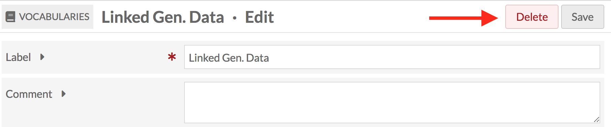

Vocabularies are a collection of published RDF metadata Classes and Properties for describing a Resource. These exist and are created externally to Omeka, and can be imported (with some limitations) into Omeka S for use throughout the Installation. The most-used Vocabulary is Dublin Core Terms (dcterms:).
Global and Site Administrators can manage their installation’s vocabularies from the Vocabularies tab on the left hand navigation of the Admin Dashboard. OmekaS comes pre-loaded with the following vocabularies: Dublin Core; Dublin Core Type; Bibliographic Ontology; and Friend of a Friend.
This screencast walks through managing and adding vocabularies. 
Vocabularies are displayed in a table with headings for Label (name of vocabulary), Prefix (used by the database), Classes (number of classes in the vocabulary), and Properties (number of properties in the vocabulary). You can sort vocabularies by these columns using the up and down arrows at the right end of each column.
You can use the icons at the right of the Label field to manage individual vocabularies. The edit icon (pencil) takes you to the edit page for that vocabulary, the delete icon (trash can) opens a sidebar to delete the vocabulary, and the details icon (ellipses) opens a sidebar with information about the vocabulary.
When editing a vocabulary, you can make changes to the label and add comments.
Adding a vocabulary
New vocabularies must be imported from an existing metadata standard source. In order to import a new vocabulary, you must have a vocabulary file or a stable link to a vocabulary.
The New vocabulary page has three sections: Basic Info, File, and Advanced.
Note that you may have to research in order to find the prefix, namespace uri, and label for the vocabulary, as these are not standardized. In addition to the vocabulary's website, you might consult http://lov.okfn.org/dataset/lov/vocabs.
After you have imported a vocabulary, you can use the Edit function to modify the vocabulary's Label and Comment, and to upload an updated vocabulary RDF file.
Basic info
This section contains the basic information for the vocabulary
- Label (required): the display name for the vocabulary in lists (ex "Dublin Core," "Friend of a Friend"
- Comment: any comments you have.
- Namespace uri (required): this should be provided by the vocabulary;
- Namespace prefix (required): This will display before the property, indicating which vocabulary (for example, the prefix for Dublin Core is dcterms).
File
This section deals with the file for the vocabulary.
- Upload the file using your browser's file manager or
- Vocabulary URL: if not uploading a vocabulary file, enter the vocabulary's url here.
- File format: a dropdown, select from:
- Autodetect
- JSON-LD (.jsonld)
- N-Triples (.nt)
- Notation3 (.n3)
- RDF/XML (.rdf)
- Turtle (.ttl)
Advanced
This section has advanced vocabulary settings
- Language: Enter the preferred language of the labels and comments using an IETF language tag.
- Label property: if this vocabulary uses an unconventional property for labels, enter the full property URI in angle brackets (
<,>)in this field. - Comment property: if you are using the above label property, enter the corresponding property URI in angle brackets (
<,>) in this field.
Editing a vocabulary
You can edit existing vocabularies by clicking the edit button (pencil icon) on the table of vocabularies.
You can also update the vocabulary by either uploading a new vocabulary file or entering the vocabulary url and saving changes. You will be able to review any changes when updating a vocabulary. If you decide you do not wish to save your changes, or click on the edit button by mistake, you can click the Cancel button next to the Save button.
Vocabulary Import
Omeka S will import properly formatted vocabularies/ontologies. rdfs:Class and rdfs:Property data will be available.
For Web Ontology Language (OWL) data, Omeka S will store only the RDF/S super-Properties and -Classes. Omeka S does not enforce any declaration or inferencing rules from OWL. Thus, for example, an owl:Class is treated in Omeka S like an rdfs:Class.
Similarly, the following are all treated only as rdfs:Property. OWL domains and ranges are also not enforced or stored.
- owl:ObjectProperty
- owl:DatatypeProperty
- owl:SymmetricProperty
- owl:TransitiveProperty
- owl:FunctionalProperty
- owl:ObjectProperty
- owl:DatatypeProperty
- owl:SymmetricProperty
- owl:TransitiveProperty
- owl:FunctionalProperty
- owl:InverseFunctionalProperty
For example, an imported ontology with an owl:ObjectProperty is not restricted to having objects that are URI’s: Omeka S will accept a Literal value without complaint.
It is up to the person entering metadata to adhere to the standards as best they can.
Deleting a vocabulary
With the exception of Dublin Core and Dublin Core Type, you can delete any vocabulary from your Omeka S installation, either from the Vocabulary browse or the Vocabulary edit page.
From the Vocabulary browse page, click the trash can/delete icon in the row for the vocabulary you want to delete (1). A drawer will open on the right side of the browser asking you to confirm that you want to delete the vocabulary (2). To delete, click the Confirm delete button, and to cancel, simply close the drawer.
From the edit vocabulary page, you can click the large red Delete button in the upper right-hand corner of the page. This will open a drawer which will ask you to confirm the deletion. To delete, click the Confirm delete button, and to cancel, simply close the drawer.
